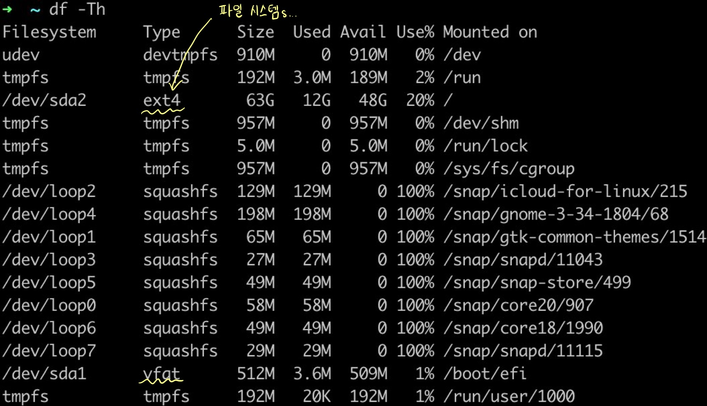
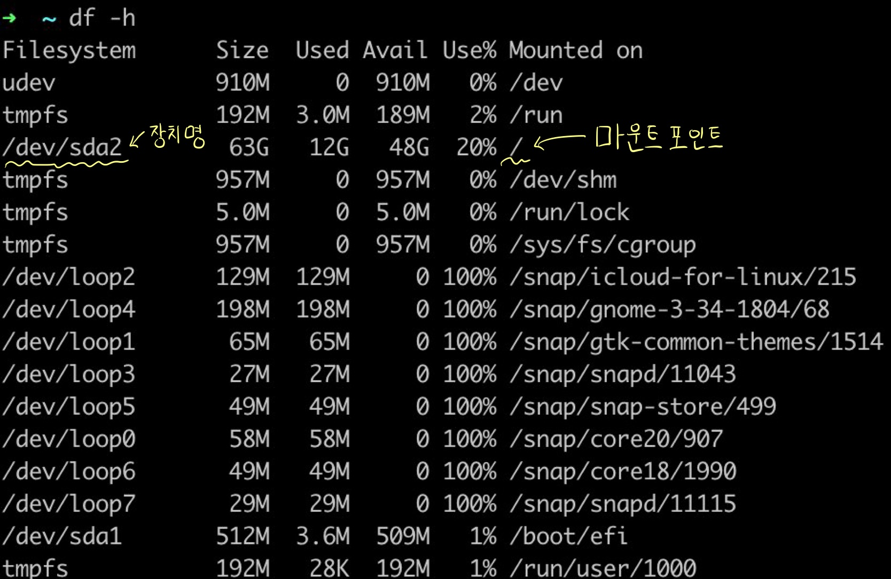
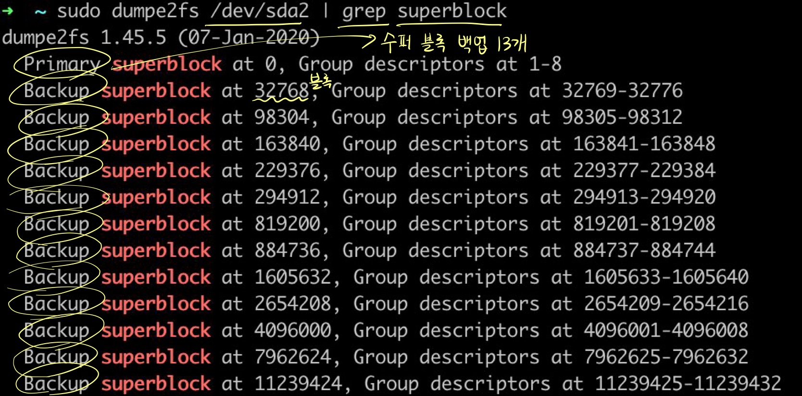

디스크 관리 명령어: df, du, fsck, e2fsck, badblocks, dump2efs
디스크 사용량 관리
df - 파일 시스템별 사용량 확인
- df: disk free의 약자로 현재 시스템에서
사용 중인 파일 시스템의사용량에 대한 정보 출력- 전체 용량, 사용 가능한 용량, 마운트 정보 등도 함께 출력
$ df [옵션] [파일 시스템]
option:
-a 모든 파일 시스템을 대상으로 디스크 사용량을 확인한다.
-k 디스크 사용량을 KB 단위로 출력한다.
-m 디스크 사용량을 MB 단위로 출력한다.
-h 디스크 사용량을 알기 쉬운 단위(GB, MB, KB 등)로 출력한다.
-t <파일 시스템의 종류> 지정한 파일 시스템의 종류에 해당하는 디스크 사용량을 출력한다.
-T 파일 시스템의 종류도 출력한다.
사용 예:
df -h
- df 명령으로 출력되는 항목은 다음과 같다.
- 파일 시스템 장치명
- 파일 시스템의 전체 용량
- 파일 시스템의 사용량
- 사용량을 퍼센트로 표시
- 파일 시스템의 사용 가능한 남은 용량
- 마운트 포인트
-
-t ext4: ext4 파일 시스템에 대해서만 정보 출력 -T: 파일 시스템의 종류 정보 출력

du - 디렉터리, 사용자별 디스크 사용량 확인
- disk usage: 특정
디렉터리별로디스크의 사용량을 알려준다.
$ du [옵션] [디렉터리]
option:
-s 특정 디렉터리의 전체 사용량을 출력한다.
-h 디스크 사용량을 알기 쉬운 단위(GB, MB, KB 등)로 출력한다.
사용 예:
du -sh .
du -sh ~/blog
파일 시스템 검사 복구
fsck - 파일 시스템 검사 및 복구
- fsck: ‘file system check’의 약자로, inode 및 블록, 디렉터리, 파일 링크 등을 검사하고 필요시 복구 작업도 수행
$ fsck [옵션] 장치명
option:
-f 강제로 점검한다.
-b <수퍼 블록> 지정한 백업 수퍼 블록을 사용한다.
-y 모든 질문에 yes로 대답하게 한다.
-a 파일 시스템 검사에서 문제가 발생했을 때 자동으로 복구한다.
사용 예:
fsck /dev/sdb1
fsck -f /dev/sdb1
- fsck 명령은 기본적으로 /etc/fstab에 지정된 파일 시스템을 대상으로 한다.
물론 다른 파일 시스템에 대한 검사도 수행할 수 있다. - 각 파일 시스템 종류별로 fsck.ext2, fsck.ext3, fsck.ext4 명령도 제공한다.
$ sudo fsck /dev/sdd1
fsck from util-linux 2.20.1
e2fsck 1.42.8 (20-Jun-2013)
/dev/sdd1: clean, 11/76912 files, 11777/307200 blocks
$
- 파일 시스템
종류 지정해 검사
$ sudo fsck.ext4 /dev/sdd1
e2fsck 1.42.8 (20-Jun-2013)
/dev/sdd1: clean, 11/76912 files, 11777/307200 blocks
$
e2fsck - fsck 기능
- fsck 처럼 inode 및 블록, 디렉터리, 파일 링크 등을 검사하고 필요시 복구 작업도 수행한다.
- <주의!> e2fsck 명령으로 파일 시스템을 점검할 때는 해당 파일 시스템의 마운트를 해제하고 해야한다!!
$ sudo e2fsck /dev/sdd1
$ sudo e2fsck -f /dev/sdd1
badblocks - 배드 블록 검사하기
- 배드 블록으로 인한 데이터 유실 피해 방지하는 것 중요!
- fsck, e2fsck 명령으로 배드 블록 검사가 가능하나 배드 블록을 검사하는 별도의 badblocks 명령도 있다.
- badblocks: 배드 블록을 검색한다.
$ badblocks [옵션] 장치명
options:
-v 검색 결과를 자세하게 출력한다.
-o 출력파일 검색한 배드 블록 목록을 지정한 출력 파일에 저장한다.
사용 예:
badblocks -v /dev/sdb1
badblocks -v -o bad.out /dev/sdb1
백업 수퍼블록을 이용해 파일 시스템 복구하기
- 파일 시스템의 기본 수퍼블록에 문제가 있으면 해당 파일 시스템을 사용할 수 없다.
- 이럴 경우를 대비해
백업 수퍼 블록이 있다. - 이 백업 수퍼 블록을 사용하여 파일 시스템 복구 가능하다.
- 이럴 경우를 대비해
dumpe2fs - 파일 시스템 정보 출력
- dumpe2fs: 파일 시스템
정보 출력
$ dumpe2fs <장치명>
사용 예:
dumpe2fs /dev/sdb1
dumpe2fs를 이용해 수퍼 블록 정보 추출
- 먼저 어떤 장치의 수퍼 블록 정보를 얻을 것인지 체크 
- /dev/sda2 장치의 수퍼 블록 정보를 얻어보자 
- 32768번 블록 등 백업 수퍼블록은 모두 13개이다.
- 이 중
하나를 사용해파일 시스템 복구할 수 있다.
- 이 중
fsck, e2fsck -b 로 파일 시스템 복구
- 위 dumpe2fs 를 이용해 얻은 백업 수퍼 블록 정보를 이용해 fsck -b 옵션을 이용해 파일 시스템을 복구한다.
$ sudo e2fsck -b 32768 -y /dev/sda2
e2fsck 1.42.8 (20-Jun-2013)
/dev/sda2 was not cleanly unmounted, check forced.
Pass 1: Checking inodes, blocks, and sizes
Pass 2: Checking directory structure
Pass 3: Checking directory connectivity
Pass 4: Checking reference counts
Pass 5: Checking group summary information
/dev/sda2: ***** FILE SYSTEM WAS MODIFIED *****
/dev/sda2: 11/76912 files (0.0% non-contiguous), 11777/307200 blocks
$
- e2fsck -b 옵션은 백업 수퍼블록 위치 지정이고, -y는 All yes!